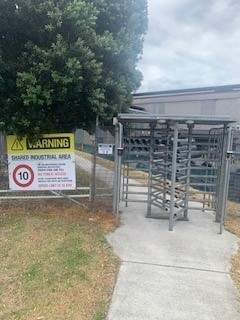
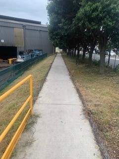
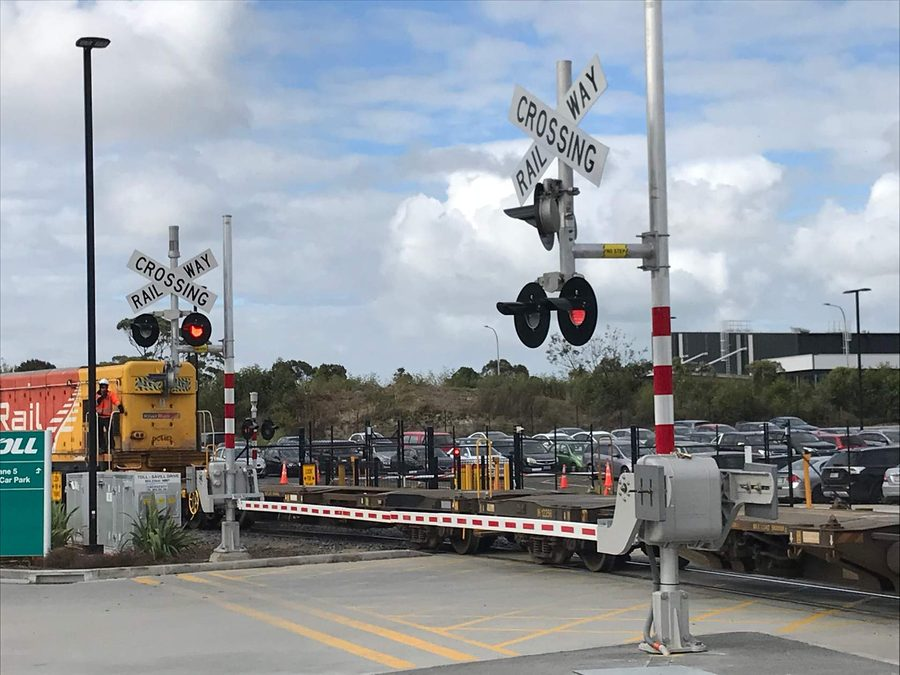
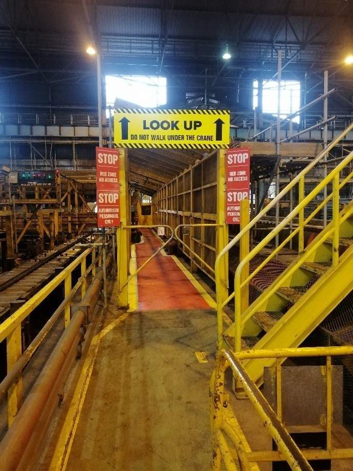
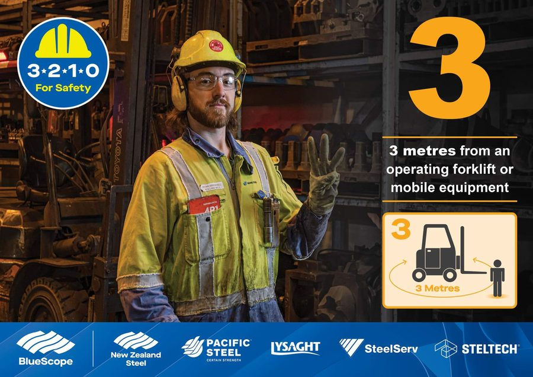
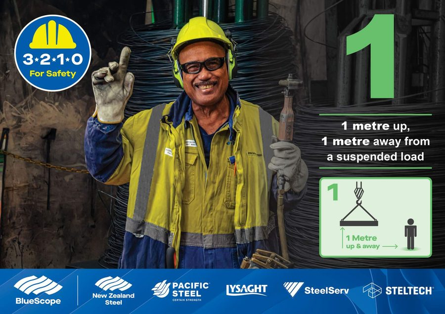
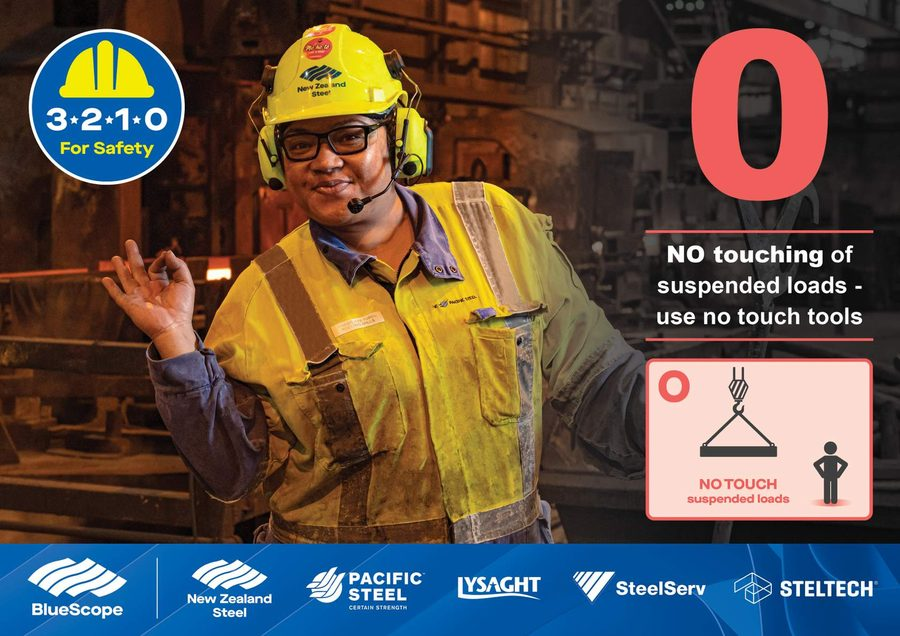
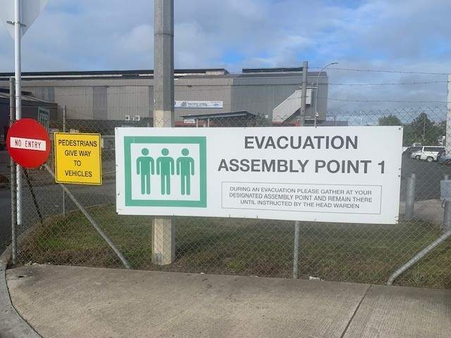

What to expect at the Rolling Mill 入场须知
Read this first. Look at the photos so the site is not a surprise. 先读这一部分。看看照片，到现场就不会陌生。
1到达现场Arriving



- 进出轧钢厂都要刷卡。Swipe in and out of the Rolling Mill.
- 只走标好的人行道。Walk only on the marked walkways.
2走哪条路Paths



- 绿色通道：所有受过入职培训的人都可以走。Green path: all inducted people.
- 红色通道：只有厂内员工和驻场承包商。你不能走。Red path: plant employees and embedded contractors only. Not for you.
- 过铁路道口一定要停下，看有没有火车。STOP and LOOK at every rail crossing.
3轧钢厂车间On the Rolling Mill floor




- 热端车间是限制区，只有授权人员可以进。The Hot End is a restricted walkway. Authorised people only.
- T-bay：抬头看。不要走在起重机下面。红区不能进。T-bay: look up. Never walk under a crane. Red zone: no access.
- 安全帽、听力保护、安全眼镜、高可视服、长裤长袖、安全鞋、手套。Hard hat, hearing protection, safety glasses, hi-vis, long trousers and sleeves, safety boots, gloves.
43-2-1-0 安全距离Distances 3-2-1-0




- 3米、2米、1米、0。记住这4个数字。3 m, 2 m, 1 m, 0. Remember the four numbers.
5出事了怎么办If something happens

- 听到连续警报：马上离开，去疏散集合点1。Continuous alarm: leave at once and go to Assembly Point 1.
- 急救箱和除颤器在值班主管办公室。First aid kit and defibrillator are in the Shift Supervisor office.
- 马上告诉你的主管。Tell your supervisor at once.
- 紧急情况：先拨打 5555（现场紧急电话），再拨打 111。Emergency: call 5555 (site emergency line) first, then 111.
6带什么，做什么Bring and wear
- 带照片的身份证件Photo ID
- 一张头肩照A head-and-shoulders photo
- 现场通行卡表格The Site Access Card form
- 穿好你的个人防护装备（PPE）Wear your PPE
You will do 3 BlueScope courses: Site Induction, Isolation Applicant, Confined Space Awareness. 你要完成3个BlueScope课程：现场入职培训、隔离申请人培训、受限空间意识培训。
In the BlueScope courses you will: 在BlueScope课程里你要：
- 用你的姓名和证件信息报名Enrol with your name and ID
- 勾选确认声明Tick the acknowledgement
- 在证书上输入你的姓名Type your name on the certificate
- 把证书交给你的主管Give the certificate to your supervisor
Short clips (no sound) 短视频（无声）
Three short clips from the course. They have no sound. 课程里的3个短视频，没有声音。
Step 3b. Read: study notes 第3b步：阅读学习要点
The BlueScope courses are in English only. These notes explain what they teach, in the same order as the course. Tap a card to open it. Read them all before Step 4.
BlueScope课程只有英文。这些要点按课程顺序，用中文解释课程内容。点开卡片阅读。请在第4步之前全部读完。
Cards 1 to 12: Site Induction (16 lessons). Cards 13 to 15: Isolation. Card 16: what you do in the course. 卡片1至12：现场入职培训。卡片13至15：隔离培训。卡片16：你在课程里要做的事。
1关爱员工与企业Caring for our people and our business (lesson 1)
- 我们的宗旨：用钢铁做出聪明的解决方案，让社区更强大。Our purpose: smart steel solutions that make our communities stronger.
- 每个人都要被公平、尊重地对待。不骚扰、不歧视、不欺凌。Treat everyone fairly and with respect. No harassment, discrimination or bullying.
- 看到同事被人欺负或辱骂，不要装没看见。去关心他，并建议他告诉经理。If you see a workmate being abused, do not ignore it. Check on them and suggest they tell their manager.
- 人权：每个人都有价值。公司不接受强迫劳动。Human rights: every person matters. No forced labour.
基本安全规则 Cardinal Rules（违反会被纪律处分，严重的会被解雇）Cardinal Rules (breaking them means discipline; serious cases mean dismissal)
- 不故意让任何人（包括自己）处于危险中。Never deliberately put anyone, including yourself, in danger.
- 不明知有人在危及生命的环境里工作还不管。Never knowingly let anyone work in a life-threatening place.
- 遵守关键安全作业程序。Follow the critical safe work procedures.
- 没有能力、没有授权，不操作设备。Only run equipment if you are competent and authorised.
- 喝了酒或吃了毒品，不上班、不操作。现场不喝酒，不持有、不使用毒品。No work under alcohol or illegal drugs. No alcohol or drugs on site.
- 不故意违反环保许可。Never deliberately break the environmental licence.
- 不打人，不用暴力威胁别人。No violence and no threats of violence.
- 不带未经授权的枪支或武器上现场。No unauthorised firearms or weapons on site.
- 不偷窃，不故意损坏公司或他人的东西，不欺诈。No theft, no deliberate damage, no fraud.
- 发声 Speak Up：觉得不对，就说出来。告诉你的经理或人事团队。公司保护真诚反映问题的人。Speak Up: if something is not right, say so. Tell your manager or the People team. People who raise real concerns are protected.
Policy PDFs in this lesson / 本课的政策文件（PDF）
2信息安全与社交媒体Information security and social media (lesson 2)
- 公司和客户的信息要保密、保护好。Keep company and customer information safe.
- 电脑和网络只能用于允许的、合理的用途。公司可能会监控，包括社交媒体上的内容。Use IT only for allowed, reasonable things. It may be monitored, including social media.
- 发帖前想一想：任何人都可能看到。不要泄露保密信息，不要损害公司名誉。Before you post, remember anyone can see it. Do not share confidential information or harm the company's name.
- 用强密码。下载外面的文件要小心。Use strong passwords. Be careful with downloads.
- 网上提到公司时，要说明你是员工或承包商。If you mention the company online, say you are an employee or contractor.
- 防骗：如果有人发短信向你要公司账号资料，不要回复，报告给经理。IT 安全团队不会用短信要你的资料。Phishing: if a text asks for your company log-in details, do not reply. Tell your manager. IT security never asks by text.
Policy PDFs in this lesson / 本课的政策文件（PDF）
3你的安全责任，事故后怎么做Your safety duty and what to do after an incident (lesson 3)
- 你有责任遵守安全和环保规则，不伤害自己、环境和同事。You must follow the safety and environment rules and not harm yourself, others or the environment.
- 所有安全和环境的危险、事故，都要马上报告主管。Report every safety or environment hazard and incident to your supervisor straight away.
有人受伤或发生严重险情（差点出事）后，六步：After an injury or a serious near miss: six steps
- 1. 确保你和别人不在危险中。1. Make sure you and others are not in danger.
- 2. 让现场安全，防止污染扩大。2. Make the area safe and stop further environmental harm.
- 3. 需要的话，马上急救。3. Give medical help if needed.
- 4. 保护现场，不要动（冻结现场）。4. Freeze the scene. Do not disturb it.
- 5. 报告事故。5. Report the incident.
- 6. 相关人员可能要做酒精和毒品检测。6. People involved may have a drug and alcohol test.
- 不能自己处理完就继续干活而不报告。要给时间让现场、设备和作业方法变安全。Do not just fix it and carry on without reporting. Allow time for the area, equipment and method to be made safe.
- 所有事故和未遂事件都要报告。Report ALL incidents and near misses.
- 安全问题随时找主管。现场可能有安全委员会、健康安全代表和工作小组。Talk to your supervisor about any safety issue. Sites may have safety committees and safety representatives.
4安全工作政策Working safely: policies (lesson 4)
- 酒精和毒品：所有现场都不允许。如果你吃的药可能影响安全工作，马上告诉主管。可能被检测；出事故后也可能要检测。Alcohol and drugs: not allowed on any site. Tell your supervisor at once if your medicine may affect safe work. You can be tested, including after an incident.
- 健康、安全、环境和社区（HSEC）：是工作的一部分。公司与员工商量、遵守法律、不断改进。HSEC (health, safety, environment, community) is part of the job. The company consults staff, follows the law and keeps improving.
- 禁烟、禁电子烟。不能抽的地方：空调区域、办公室、工作小屋、会议室、食堂、危险区域、配电室、有禁烟标志的地方、公司车辆、行人出入口。No smoking or vaping in: air-conditioned areas, offices, cabins, meeting rooms, canteens, hazardous areas, switch rooms, any 'no smoking' sign, company vehicles, pedestrian entrances.
- 只能在指定的室外区域吸烟。打火机是易燃物，不能带进现场。Smoke only in designated outdoor areas. No cigarette lighters on site.
- 手机和电子设备：不要边走路边打电话。在现场开任何车都不能用手机（包括蓝牙免提）。开移动设备时要关机，除非获准。Phones and devices: do not walk and talk. No phone, even hands-free, when driving on site. Switch devices off when driving mobile equipment unless authorised.
Policy PDFs in this lesson / 本课的政策文件（PDF）
5心理健康支持Mental health support (lesson 5)
- 公司关心员工的心理健康，会减少可能伤害心理的做法和环境。The company cares about your mental health and works to remove things that harm it.
- 员工援助计划 EAP：免费、保密、独立。员工和直系家属都可以用。电话：0800 327 669。Employee Assistance Program (EAP): free, confidential, independent, for staff and immediate family. Phone 0800 327 669.
- 接电话的是受过培训的专业人员，会帮你找到合适的帮助。A trained person answers and guides you to the right help.
- 另外有一项新西兰全国的免费服务，提供健康、心理健康和社会服务，每天24小时。There is also a free national health and mental health service, open 24 hours, 7 days.
- 经理和主管有专门的热线。Managers and supervisors have their own hotline.
6孕期工作安全（第3个视频）Pregnancy at work (our video 3; lesson 6)
- 这一课就是一个视频，我们已经做成中文版（本页第3个视频）。This lesson is one video. Our Chinese version is video 3 above.
- 公司会给你工作区危险的信息；除非风险太大，你继续做原来的工作；你的隐私受到尊重。You get information on hazards in your area. You stay in your normal job unless the risk is too high. Your privacy is respected.
- 可能有害的东西包括：一氧化碳、电磁场、有害物质、很大的噪音、振动、辐射、高温。Possible hazards: carbon monoxide, electromagnetic fields, hazardous substances, loud noise, vibration, radiation, heat.
- 有《怀孕与工作检查表》：你和主管一起填，找出危险，与医生或医护人员讨论，再和经理一起签字确认。There is a Pregnancy and Work checklist. You and your supervisor fill it in, talk to your doctor, then sign the plan with your manager.
- 想了解更多，找你的主管、经理，或人事、安全代表。For more information, ask your supervisor, manager, or HR or safety representative.
7爱护环境Caring for the environment (lesson 7)
- 环境六个方面（LAWWNE）：土地、空气、水、废物、噪音、能源和温室气体。Six areas (LAWWNE): Land, Air, Water, Waste, Noise, Energy and greenhouse gas.
- 在现场你要：考虑对环境的影响；防止环境事故；保持工作环境安全干净；报告所有环境事故。On site you must: think about environmental impact, prevent incidents, keep the workplace safe and clean, report all environmental incidents.
- 废物：减少、再用、回收，最后才是丢弃。Waste: reduce, reuse, recycle, dispose of last.
- 发现漏油：如果安全，马上设法阻止扩散，然后报告主管。不要等到下一班。If you see an oil leak: if it is safe, stop it spreading and report to your supervisor. Do not wait until next shift.
- 视频提醒：油和化学品不能倒进雨水沟或泥土。如果发生了，马上围堵并通知主管；流进雨水沟要报告。Video reminder: never pour oil or chemicals into stormwater drains or soil. If it happens, contain it and tell your supervisor.
Policy PDFs in this lesson / 本课的政策文件（PDF）
89 项严重安全风险（课程第8、9课）The 9 serious safety risks (lessons 8 and 9)
- 这9项风险可能让人重伤或死亡。公司有控制措施，但你也要遵守规则。These 9 can seriously injure or kill. The site has controls, and you must follow the rules.
1 移动设备（叉车、车辆）1 Mobile equipment (forklifts, vehicles)
- 司机很难看到你。遵守交通规则，保持隔离区。离工作的叉车至少3米。没有授权不得开叉车。Drivers cannot see you easily. Follow traffic rules and keep the exclusion zone. Stay 3 m from a working forklift. Do not drive without authorisation.
2 起重机2 Cranes
- 没有授权不操作。遵守“升一米、离一米”。站在隔离区外或有屏障的地方。绝不走到吊起的重物下面。绝不站在危险线上。No operating without authorisation. Follow 1 m up, 1 m away. Stay outside the zone or behind a barrier. NEVER walk under a load. NEVER stand in the line of fire.
3 转动和移动的设备（防护罩）3 Rotating and moving equipment (guards)
- 在移动设备上或旁边工作前，必须先隔离，并有批准的安全作业方法（SSW 或 JSEA）。Before working on or near moving plant, isolate it and have an approved safe system of work (SSW or JSEA).
- 防护罩没装好，不得开机。拆除或绕过安全装置、急停装置，是严重违规。Never run a machine without guards. Removing or overriding a safety or emergency device is a serious breach.
4 用电安全4 Electrical safety
- 设备要完好。只有授权人员才能做电气工作。发现破电线、坏电缆、坏开关要报告。Equipment must be in good condition. Only authorised people work on electrics. Report frayed wires, damaged cables and faulty switches.
- 只用检验标签有效的电线和电动工具。作业前要断电隔离。能插软线的插座要有漏电保护（RCD）。Use only leads and tools with a current test tag. Isolate power before work. Sockets need RCD protection.
5 货物固定（装车）5 Load restraint (loading vehicles)
- 运输中谁有控制权，谁就有责任让货物安全。给货物做固定的人，必须受过 PSNZ 货物固定培训。Anyone in control of a transport job is responsible for safe loads. If you secure loads, you must be trained in the load restraint guidelines.
6 货物存放6 Load storage
- 货物要放得安全、稳定。存放设备要经批准、定期检查。存放规定要对操作员讲清楚。Store product safely and stably. Equipment must be approved and inspected. Operators must be told the storage rules.
- 堆放区里的人可能被货物或设备砸伤。People in stacking areas can be hit by product or equipment.
7 有害物质7 Hazardous substances
- 只有受过培训的人才能存放和使用。新物质要经过批准才能引进。Only trained people store and handle them. New substances need approval.
- 带进现场的有害物质必须有标签；必须有安全数据表（SDS），家庭用量除外。有疑问就问。Containers need labels, and an SDS (except household amounts). If unsure, ask.
8 工艺安全8 Process safety
- 包括：液体化学品泄漏、有毒或易燃气体泄漏、爆炸；超出安全设计范围（例如关键报警响了、安全系统动作了）；防护屏障缺失或失效。Includes chemical spills, toxic or flammable gas leaks, explosions; operating outside safe limits (e.g. critical alarm or safety system activates); a safety barrier missing or failing.
- 要遵守你所在部门的进入规定。Follow the access rules of the department you are in.
9 高处坠落和卡车9 Falls from height and trucks
- 能在地面做，就不要上高处。上高处是最后的办法。Work from the ground if you can. Working high is the last resort.
- 在高处作业必须有 SOP、JSEA 或作业许可，并有防坠措施。在卡车上作业：戴安全帽（系好下颚带），安全带连在卡车平台上，再加平时的 PPE。Work at height needs a SOP, JSEA or Permit to Work, with fall controls. On a truck: hard hat with chin strap, harness attached to the truck platform, plus normal PPE.
3-2-1-0 安全口号3-2-1-0 safety rule
- 3：离工作的叉车或移动设备3米。2：离没有防护的边缘2米。1：吊起的重物，升一米、离一米。0：不用手碰吊起的重物，用免接触工具（推拉杆）。3 m from working forklifts or mobile equipment. 2 m from an unprotected edge. 1 m up, 1 m away from a suspended load. 0 touching of suspended loads: use no-touch tools.
- 课程有3个短视频：钢卷砸人、东西从高处掉落、人从高处摔下。看的时候想：如果是我的工地，我怎么防止？The lesson has 3 short clips: a coil falling on a person, an object falling from height, a person falling. Ask yourself how you would prevent it on your site.
- 第9课测验会问：哪些是这9项严重风险，以及3-2-1-0 的数字。Lesson 9 quiz is about: which risks are the 9 serious ones, and the 3-2-1-0 numbers.
Policy PDFs in this lesson / 本课的政策文件（PDF）
9现场的个人安全（第10课）Personal safety on site (lesson 10)
Take 2：停一下，想一想，做计划Take 2: stop, think, plan
- STOP 停：开工前先停下，清空杂念。THINK 想：有什么危险。PLAN 计划：安全地做。不熟悉的工作，或工作内容变了，一定要用。STOP before you start. THINK about the hazards. PLAN to work safely. Always use it for an unfamiliar job or a changed job.
- 问自己：危险是什么？怎么控制？人合适吗？工具和设备好吗？没把握就问。需要停工就停。需要“作业许可”（Permit to Work）要先批准。Ask: what are the hazards, how are they controlled, are the right people on the job, are the tools good? Ask if unsure. Stop if needed. Get any Permit to Work approved first.
搬运Manual handling
- 背挺直，不要侧弯或扭腰。双脚分开，东西靠近身体（轻的东西也一样）。手肘高过肩膀用力，容易受伤。能用工具，就不要硬搬。Keep your back straight, no side bend or twist. Feet apart, load close. Force with elbows above shoulders causes injury. Use aids where you can.
PPE 个人防护装备PPE (personal protective equipment)
- 每个厂区有自己的 PPE 要求。进入现场最低要求：坚固的包头鞋（不穿凉鞋、露趾鞋）；黄色或橙色高可视服，要扣好。Each plant has its own PPE rules. Minimum to enter site: sturdy covered shoes (no sandals), yellow or orange hi-vis done up.
走路和楼梯Walking and stairs
- 走人行道和指定通道。绿色通道：所有受过入职培训的人都可以走。红色通道：只有厂内员工和驻场承包商。Keep to footpaths and marked walkways. Green path: all inducted people. Red path: plant employees and embedded contractors only.
- 车辆在任何道路和建筑物里都有优先通行权。上下楼梯要扶扶手。Vehicles always have right of way, on roads and inside buildings. Use the handrail on stairs.
个人挂锁Personal lock
- 用之前必须先完成 PSNZ 隔离申请人培训。工作结束要取下自己的挂锁（紧急疏散除外）。You must finish the Isolation Applicant training first. Remove your padlock at the end of your work (not in an emergency evacuation).
铁路门Rail gates
- 铁路门供 KiwiRail 早上9点到10点的调车进出。只有按程序签字批准的人才能开关门。过铁路道口一定要停下，看有没有火车。The rail gate is for KiwiRail's morning shunt, 9 to 10 am. Only people signed off may open or close it. STOP and LOOK at every rail crossing.
评估危险（课程里的情景练习）Assessing hazards (the practice scenarios in the course)
- 开工前先 STOP，清空杂念。再 THINK 要控制哪些危险。再 PLAN：开工前和工作中落实所有安全措施，并告诉所有相关的人。安全比赶时间更重要。First STOP and clear your mind. Then THINK about the hazards. Then PLAN all controls before and during the job and tell everyone involved. Safety comes before speed.
- 要进入某些现场，还需要现场入职培训和其他授权。Some sites also need a site induction and other authorisations.
Policy PDFs in this lesson / 本课的政策文件（PDF）
10紧急情况（第11、12课）Emergencies (lessons 11 and 12)
- 紧急情况：先拨打 5555（现场紧急电话），再拨打 111。Emergency: call 5555 (site emergency line) first, then 111.
- 要知道：疏散点在哪里；紧急情况找谁。工厂入职培训会再讲。Know where the evacuation points are and who to contact. The plant induction tells you more.
- 常见紧急情况：火灾、严重受伤、有人被困、化学品泄漏、气体泄漏、易燃液体泄漏。Typical emergencies: fire, serious injury, trapped worker, chemical spill, gas leak, flammable liquid spill.
SECURE 六步SECURE: six steps
- S 停工，保持冷静。 E 评估有没有危险。 C 拨紧急电话。 U 需要就急救或找急救。 R 减少紧急情况的影响。 E 向救援人员说明情况。S Stop work, stay calm. E Evaluate the danger. C Call the emergency number. U Use or find first aid. R Reduce the effect. E Explain to the emergency team.
- 听到连续的警报声：马上从最近的安全出口离开，去疏散集合点。On a continuous alarm: leave by the nearest safe exit and go to an assembly point.
- 意外小火：如果安全，先扑灭，再报告主管，并填写事件报告。A small accidental fire: if it is safe, put it out, then report to your supervisor and complete an incident report.
- 事故或险情后的步骤，见卡片3。STOP / Take 2，见卡片9。Steps after an injury or near miss: see card 3. STOP / Take 2: see card 9.
11轧钢厂现场规则（第13课）Rolling Mill site rules (lesson 13)
- 轧钢厂：钢坯加热到1000度以上，热轧成钢筋和盘条。这个入职培训有效期1年。The Rolling Mill heats steel billets above 1000 C and rolls them into bar and rod. This induction is valid for 1 year.
PPE（最后一道防线，必须按设计穿戴）PPE (the last line of defence; wear it as designed)
- 安全帽（长发要扎好）、听力保护、安全眼镜（处方眼镜要有侧护板）、黄色或橙色高可视服（要扣好）、长裤长袖（袖子放下）、安全鞋、合适的手套。Hard hat (hair tied back), hearing protection, safety glasses (prescription glasses need side shields), yellow or orange hi-vis done up, long trousers and sleeves, safety boots, gloves for the task.
报警、灯和警笛Alarms, lights and sirens
- 加热炉的连续报警响了：要告诉值班经理（shift manager）。If the furnace continuous alarm sounds, tell your shift manager.
- 红灯亮 = 轧机在运行，不要进去。Red light = mill running. Do not enter.
- 警笛响 = 钢坯马上要送进轧机。立刻离开红区。Siren = a billet is about to go into the mill. Leave the red zone at once.
- Cobble（钢缠）：热钢从轧制线里冲出来、跑出来。很危险，要远离。A cobble is when hot steel breaks out of the rolling line. It is dangerous. Keep away.
热端车间 Hot End Floor（限制区）Hot End Floor (restricted area)
- 只有授权人员可以进。红色警示灯亮时，只有核心热端员工可以在里面。非核心人员要先得到 CP3 或热端班组长的允许。Authorised people only. When the red light is on, only core hot end staff may be inside. Others must ask CP3 or the hot end team leader first.
T-bay 走道（红区）T-bay walkway (red zone)
- 只有核心员工做自己的工作时才能用。不能用它进出轧钢厂。其他人走轧钢厂外面的路。紧急情况除外。Core team only, doing their tasks. Not an entrance or exit. Everyone else uses the path outside the mill, except in an emergency.
绿色和红色通道Green and red paths
- 绿色通道：所有受过入职培训的人都可以走。红色通道：只有厂内员工和驻场承包商。Green path: all inducted people. Red path: plant employees and embedded contractors only.
- 红区不是随时都能进。You cannot enter a red zone at any time.
进出和物品Entry, exit and items
- 进出轧钢厂都要刷卡。Swipe in and out of the Rolling Mill.
- 轧钢厂不允许带打火机。No cigarette lighters in the Mill.
急救和紧急情况First aid and emergencies
- 急救箱和除颤器在值班主管办公室。The first aid kit and defibrillator are in the Shift Supervisor office.
- 疏散集合点：在轧钢厂停车场的出口。Assembly point: at the exit of the Rolling Mill car park.
- 连续警报响起：1 马上离开；2 去集合点；3 听警戒员（warden）指挥；4 警戒员说“解除”之前，不要回厂房。Continuous alarm: 1 leave at once; 2 go to the assembly point; 3 follow the warden; 4 do not go back until the warden says all clear.
- 紧急情况：先拨打 5555（现场紧急电话），再拨打 111。Emergency: call 5555 (site emergency line) first, then 111.
其他Other
- 在移动设备上或旁边作业前，必须先隔离。带电或运行的设备上作业，要挂自己的个人挂锁。Isolate moving machinery before working on or near it. Apply your own personal padlock on live equipment.
- 所有事故、事件和未遂事件都要报告。Report all accidents, incidents and near misses.
- 这一课最后有一个15句话的“同意/不同意”分类练习，内容就是上面这些规则。The lesson ends with a 15-statement agree/disagree sort. It covers the rules above.
12课程结尾：小结、声明、证书（第14-16课）Finishing Site Induction: summary, acknowledgement, certificate (lessons 14 to 16)
- 小结：课程介绍了公司对安全工作场所的承诺，你在现场的安全和环保责任，以及主要危险。Summary: the commitment to a safe workplace, your safety and environment duties, and the main hazards.
- 声明：你确认你知道自己对每项政策的责任和行为要求。有问题找主管、经理或人事。Acknowledgement: you confirm you know your responsibilities under each policy. Ask your supervisor, manager or HR if unsure.
- 你不确认，培训记录就不会更新。Your training record is not updated unless you acknowledge.
- 证书：见卡片16。Certificate: see card 16.
13隔离培训：开始（幻灯片1-5）Isolation training: start (slides 1 to 5)
- 这是“隔离申请人”知识培训，约30分钟，最后有测验。This is Applicant Isolation awareness training, about 30 minutes, with a test at the end.
- 第2张：登记页。你要输入自己的姓名和编号，再点 Confirm。（见卡片16）Slide 2: enrolment. You type your own name and ID, then press Confirm (see card 16).
- 第3张：视频。我们已经做成中文版（本页第2个视频）。视频里的英文标题没有翻译，请对照本页卡片。Slide 3: the video. Our Chinese version is video 2 above. English headings burned into the picture are not translated.
- 第4、5张：课程信息和目录，没有新规则。Slides 4 and 5: course information and contents. No new rules.
14隔离：基础和强制规则（幻灯片6-9）Isolation: basics and the mandatory rules (slides 6 to 9)
- 安全作业：触电可以致命。储存的能量（压力、重物等）也可能伤人或致命。Work safely: electric shock can kill. Stored energy can injure or kill.
- 上锁挂牌（LOTO）第一步：了解设备和系统：危险点、隔离点、上锁程序。不熟悉的机器本身就是危险。First step in lockout: know the hazards, the isolation points and the lockout procedure. Unfamiliar machinery is itself a hazard.
- 目的：规定一套书面的上锁挂牌系统，保护人员、设备和环境。Purpose: a written lockout and tag-out system to protect people, equipment and the environment.
- 范围：适用于所有员工和承包商、所有厂房和设备。现场只能用这一套隔离程序。需要隔离的人要受过培训。Scope: all staff and contractors, all plant and equipment. This is the only isolation system on site. Anyone who needs an isolation must be trained.
强制安全规则（幻灯片上列的）Mandatory safety rules (listed on the slides)
- 1. 所有员工和承包商都要有有效的厂区入职培训。1. Everyone must have a current plant induction.
- 2. 需要隔离才能工作的人，必须受过这个程序的培训。2. Anyone needing an isolation must be trained in this procedure.
- 3. 有疑问，一定要问。3. If in doubt, always ask.
- 4. 作业组的申请人在上锁或解锁前，要先通知授权人。4. An applicant in a work party tells the Authorised Person before signing on or off.
- 5. 隔离还没做好、没生效，不准开工。5. Do NOT start work until the isolation is applied and current.
- 6. 隔离还没做好，不准签入。6. Do NOT sign on until it has been applied.
- 7. 签入或上锁期间，任何人不得离开 Pacific Steel 场地。7. No one leaves site while signed or locked on.
- 8. 作废的隔离文件由现场管理层保存1年。8. Cancelled isolation paperwork is kept for 1 year by site management.
- 9. 申请人一次只签入和自己当前工作有关的那一个隔离。9. An applicant signs on only to the isolation for their own task at that time.
15隔离：角色、挂锁和解锁（视频和测验内容）Isolation: roles, locks and removing locks (video and quiz topics)
- 隔离 = 切断设备的所有能量来源，包括储存的能量，让设备可以安全作业。不是只关一个能源。Isolation = cut ALL energy sources, including stored energy, so the equipment is safe. Not just one source.
- 需要隔离的东西：所有机器、化学品、蒸汽和燃气、储存的液压和压缩空气、吊起的重物、电线、电机和电器、水管和高压管线。Things that need isolating: all machines, chemicals, steam and gas, stored hydraulic and compressed air, suspended loads, electrics, water and high-pressure lines.
角色和挂锁颜色Roles and lock colours
- 授权人 Authorised Person（绿色锁）：经公司培训并授权，代表作业组申请隔离。他办理多人隔离：填文件，交给协调人，把设备钥匙和文件放进集体隔离板（GIB），自己的锁也锁在板上。Authorised Person (green lock): trained and authorised to ask for an isolation for a work party. Does the multi-person isolation paperwork and puts keys and papers in the group isolation board (GIB).
- 协调人 Facilitator（蓝色锁）：实际做隔离的合格人员。要是受过培训的技工、电气或工程人员，由公司授权，名字记在工作登记册上。Facilitator (blue lock): the competent person who actually applies the isolation. A trained tradesperson, electrician or engineer, authorised and listed on the Works Register.
- 申请人 Applicant（橙色锁）：需要被保护、要在设备旁工作的人。只上锁和自己当前工作有关的隔离。没有橙色锁，可向授权人要绿色标签挂在你的个人锁上。Applicant (orange lock): the person who needs protection. Locks on only to the isolation for their own work. No orange lock? Ask the Authorised Person for a green tag on your personal lock.
- 核实人 Verifier：第二个协调人或授权人，用来检查协调人隔离的设备对不对。他不亲手做隔离，只是旁观，对照隔离申请表（IRF）确认设备都隔离了。Verifier: a second Facilitator or Authorised Person who checks the right equipment was isolated. Does not do the isolating, only observes and checks against the IRF.
- 值班经理或协调员 Duty Manager / Coordinator：对这个厂区或作业区负责的人。生产时通常是班长或值班经理；维修时是维修设备经理或维修协调员。Duty Manager or Coordinator: the person responsible for the plant or work area. In production usually the shift manager or shift coordinator; in maintenance the maintenance equipment manager or coordinator.
谁可以上锁、解锁Who may lock on and remove locks
- 谁可以上锁：只有经 Pacific Steel 培训并授权的员工或承包商。不是“任何人”。Who can lock out: only Pacific Steel staff or contractors who are trained and authorised. Not just anyone.
- 谁可以拆锁和牌：只有上锁的那个人。或者主管，但要先按程序得到上锁人的同意。Who can remove a lock or tag: the person who put it on, or a supervisor after getting that person's permission, following the procedure.
- 设备上已经有锁和牌：你要加上自己的锁。每个在设备上工作的人都要上自己的锁，不能靠别人的锁。Equipment already locked and tagged: add your own lock. Every person working on it must put on their own lock.
加入隔离的步骤Steps to join an isolation
- 确认这个隔离包括你要操作的设备。检查 IRF，注意手写的修改。联系授权人，申请加入。Check the isolation covers your equipment. Check the IRF and any handwritten changes. Ask the Authorised Person to join.
- 授权人批准后会告诉你去哪块集体隔离板（GIB）。先确认他已经挂了绿色锁，再把你的橙色锁锁上，挂锁上要清楚写上你的名字和电话。If approved, you are told which GIB. Confirm the green lock is on. Then fit your orange lock, clearly marked with your name and phone number.
- 上锁前你有权要求核实这个隔离。Before you lock on, you can ask for the isolation to be verified.
结束Finishing
- 先确认这个隔离对应的工作已经做完。从 GIB 上取下你的橙色锁，并告诉授权人。离开现场前，必须先取下你的挂锁。Make sure the job is finished. Take your orange lock off the GIB and tell the Authorised Person. You must remove your padlock before leaving site.
- 测验有9题（共90分）。课程里没显示及格线。The quiz has 9 questions (90 points). The pass mark is not shown in the course.
16你在课程里要做的事What you must do in the course
- 隔离课程第2张：输入你自己的姓名和编号，再点 Confirm。Isolation course, slide 2: type your own name and ID number, then press Confirm.
- 现场入职课程：做3个测验题、一个15句话的“同意/不同意”分类，以及4个情景练习。Site Induction: 3 quiz questions, a 15-statement agree/disagree sort and 4 practice scenarios.
- 声明页（是/否）：如果你已经读懂、明白自己的责任，选“是”（Yes）。不确定，先问主管。Acknowledgement (yes/no): if you have read and understand your responsibilities, choose Yes. If unsure, ask your supervisor first.
- 证书页：在证书上输入你自己的全名，然后打印，或者截屏，把它交给你的主管。最后点 EXIT COURSE 关闭课程。Certificate: type your own full name on the certificate, then print it or take a screenshot and give it to your supervisor. Then press EXIT COURSE.
- 3个课程都要做完。Finish all 3 courses.
Step 3c. Practice 第3c步：练习
19 questions. Tap an answer to see if it is right. Nothing is sent anywhere. 共19题。点一个答案，马上知道对不对。成绩不会发送给任何人。
Your score is saved on this device only. 成绩只保存在本设备上。
Confined Space Awareness 受限空间意识
The third BlueScope course. Watch the 6 videos, read the cards, then do the practice. BlueScope的第3个课程。看6个视频，读学习要点，再做练习。
Watch 观看
Read 学习要点
11 cards in the same order as the videos. Tap a card to open it. 11张卡片，顺序和视频一致。点开卡片阅读。
1什么是受限空间What a confined space is
- 受限空间不是给人长时间待的地方，但常常要进去做清洁、检查、安装、维修。A confined space is not built for people to stay in, but we often go in to clean, inspect, install or repair.
- 常见特点：入口小、空气不流通、里面的空气可能缺氧、有毒或会着火。Typical features: small way in, poor airflow, and air that may lack oxygen, be toxic or be flammable.
- 例子：罐、槽、料斗、筒仓、管道、地沟、人孔、烟道。Examples: tanks, vessels, hoppers, silos, pipes, pits, manholes, ducts.
- 每年都有人因为不了解危险、没有做好准备就进去而死亡。People die every year because they did not understand the danger and went in unprepared.
- 没有作业许可证，不准进入受限空间。No permit, no entry.
2作业许可证The entry permit
- 许可证说明：危险已经找出来了，风险已经评估了，控制措施已经做好了。The permit shows the hazards are identified, the risks assessed and the controls in place.
- 控制措施写在许可证（或作业程序）上。进去之前先读，并照着做。The controls are written on the permit (or procedure). Read it before you go in and follow it.
- 许可证上还要写：谁可以进、做什么、做多久、要用的防护装备、检测结果、紧急安排。The permit also shows who may enter, the task, the time, the PPE, the test results and the emergency plan.
- 许可证要放在入口处，让人看得到。Display the permit at the entry point where people can see it.
- 进入受限空间从来不是一个人的事。Confined space entry is never a one-person job.
3角色分工Roles
- 进入者：进去干活的人。听从许可证，感觉不对马上出来。Entrant: the person who goes in. Follows the permit and leaves at once if something feels wrong.
- 监护人（SSP，也叫 Confined Space Watcher）：站在外面，一直看着、一直保持联系。必须受过培训。Standby person (SSP / Confined Space Watcher): stays outside, watches and keeps contact the whole time. Must be trained.
- 主管：检查许可证和条件，确认控制措施都在，批准开工。Supervisor: checks the permit and conditions, confirms the controls are in place and authorises the work.
- 救援人员：受过训练、有设备，负责救人。Rescue team: trained and equipped to get someone out.
- 每个受限空间都要有一个受过培训的监护人，站在受限空间外面。Every confined space needs a trained standby person positioned outside.
4危险一：缺氧Hazard 1: low oxygen
- 空气里大约 78% 是氮气，21% 是氧气。可以工作的氧气范围是 19.5%–23.5%。Air is about 78% nitrogen and 21% oxygen. The safe working range is 19.5%–23.5% oxygen.
- 低于 19.5%：容易累、呼吸变快、心跳加快、动作不协调、判断力变差，然后恶心、呕吐、昏迷。Below 19.5%: tired quickly, heavy breathing, racing heart, poor coordination, poor judgment, then nausea, vomiting, unconsciousness.
- 低于 6%：几分钟内会死亡。Below 6%: death within minutes.
- 氧气可能被用掉（生锈、焊接、燃烧）或被别的气体顶走。Oxygen can be used up (rusting, welding, burning) or pushed out by other gases.
- 进去之前一定要测氧气。Always test oxygen before entry.
- 氧气太多也危险：太高会让东西更容易着火。Too much oxygen is also dangerous: it makes fire much easier to start.
5危险二、三：易燃和有毒Hazards 2 and 3: flammable and toxic
- 着火或爆炸要三样东西：燃料、氧气、火源。Fire or explosion needs three things: fuel, oxygen and a source of ignition.
- 常见易燃来源：气焊设备、喷漆、用溶剂清洁、管道或阀门漏气、化学反应。Common flammable sources: gas welding sets, spray painting, solvent cleaning, leaking pipes or valves, chemical reactions.
- 空间里有易燃气体时，只用防爆（flameproof）的工具和设备，并保持通风。If the space is flammable, use flameproof tools and equipment only, and keep ventilating.
- 有毒气体和烟雾可能来自里面或外面的作业，比如焊接烟、油漆、清洁剂。Toxic gases and fumes can come from work inside or outside, such as welding fume, paint and cleaners.
- 搅动污泥会放出里面困住的气体或蒸气。Disturbing sludge can release trapped gas or vapour.
- 有害物质可以通过吸入、皮肤接触、吞入进入身体。Hazardous substances can enter the body by breathing, skin contact or swallowing.
6危险四：吞没和结构Hazard 4: engulfment and configuration
- 吞没：料斗、筒仓里存的东西会移动或塌下来，把人埋住。Engulfment: material stored in a hopper or silo can shift or collapse and bury a person.
- 结构危险：斜的底、会收窄的墙、里面很多管子，人容易被卡住，也很难救出来。Configuration hazards: sloping floors, narrowing walls or crowded pipework can trap a person and make rescue hard.
- 平底的罐不算结构危险；斜底或收窄的才算。A flat-bottomed tank is not the example; sloping or converging shapes are.
- 还要想一想：热、噪音、滑倒、坠落、电、移动的部件。Also think about heat, noise, slips, falls, electricity and moving parts.
7安全作业五步Five steps to work safely
- 第 1 步：找出危险。Step 1: identify the hazards.
- 第 2 步：评估风险。想一想会不会发生，发生了后果多严重。Step 2: assess the risks. How likely, and how bad if it happens.
- 第 3 步：决定控制措施。最好的办法是不进去（能从外面做就从外面做）。Step 3: decide the controls. The best control is not to enter at all.
- 第 4 步：用作业许可证把措施落实。Step 4: put the controls in place through the entry permit.
- 第 5 步：持续监控，条件变了就要加措施。Step 5: keep monitoring, and add controls if conditions change.
- 评估时可以：问专家、做检测、看技术资料和程序、参考以前的经验。To assess, you may consult experts, test, check technical data and procedures, and use past experience.
8气体检测Gas testing
- 进去之前，用气体检测仪测：氧气、有毒气体、易燃气体、粉尘和微粒。Before entry, test with a gas detector for oxygen, toxic gases, flammable gases and dust or particles.
- 要从上到下、整个空间都测。不同的气体停留在不同的高度。Test through the whole space, top to bottom. Different gases sit at different levels.
- 测试要由受过培训的人用校准过的仪器来做。Testing is done by a trained person with a calibrated instrument.
- 自动检测仪在空气变危险时会报警，是很好的保护。进去之后也要继续检测。Automatic detectors alarm when the air turns hazardous. Keep monitoring after entry too.
- 仪器报警：马上出来，不要争论。If the alarm sounds: get out straight away, do not argue.
9吹扫和通风Purging and ventilation
- 吹扫：用氮气之类的稳定气体把有害或易燃的空气赶出去。Purging: push contaminants and flammable air out with a stable gas such as nitrogen.
- 自然通风不够时，要用机械通风。If natural airflow is not enough, use mechanical ventilation.
- 通风有两种：抽出（extraction）和送入（forced）。Two kinds: extraction (pull air out) and forced (push fresh air in).
- 如果作业会产生烟或气体（焊接、喷漆），通风更加重要。Ventilation matters even more when the work makes fumes or gas, such as welding or painting.
- 通风不能代替气体检测，两个都要做。Ventilation does not replace testing. Do both.
10个人防护装备是最后一道防线PPE is the last resort
- 常用 PPE：安全帽、手套、安全靴、听力保护、眼睛和面部保护、呼吸器、安全带。Common PPE: hard hat, gloves, boots, hearing protection, eye and face protection, respirator, harness.
- PPE 只在其他控制措施不能完全控制风险时才用，而且不是用来代替它们。PPE is for when other controls cannot fully control the risk. It does not replace them.
- 需要的 PPE 必须写在许可证或程序上。The PPE needed must be listed on the permit or procedure.
- 进去前先检查装备，不合格的不要用。Check your gear before entry. Do not use damaged gear.
11紧急情况：监护人绝不进去Emergencies: the standby person never enters
- 里面有人倒下：监护人不能进去，不管有没有危险。If someone collapses inside, the standby person does not go in, whatever the hazards.
- 马上做：呼叫求救、通知主管和救援人员、保持联系、按应急计划。Do at once: call for help, tell the supervisor and rescue team, keep contact, follow the emergency plan.
- 很多死亡是想救人的第二个人，进去后也倒下了。Many deaths are the second person who rushed in to help and also collapsed.
- 只有受过训练、带了设备的救援人员才可以进去救人。Only trained and equipped rescuers go in.
- 出现任何不对劲，进入者先出来，再报告。Entrants get out first at any sign of trouble, then report.
- 工作做完：关闭许可证，让所有人确认已经出来。When finished: close the permit and account for everyone.
Practice 练习
10 questions. Tap an answer to see if it is right. Nothing is sent anywhere. 共10题。点一个答案，马上知道对不对。成绩不会发送给任何人。
Your score is saved on this device only. 成绩只保存在本设备上。
Step 3d. Before you start 第3d步：开始前检查
Ticks are saved on this device only. 打钩只保存在本设备上。
Step 4. Do the BlueScope questionnaires
第4步：完成BlueScope在线问卷
- Sign in with the login your supervisor gives you.
用主管给你的账号登录。 - Do Contractor Induction. Do all 3 courses: Site Induction, Isolation Applicant, Confined Space Awareness.
完成“Contractor Induction”（承包商入职培训）。3个课程都要做：现场入职培训、隔离申请人培训、受限空间意识培训。 - Answer the questions on the BlueScope page.
在BlueScope网页上回答问题。
Step 5. Finish 第5步：完成
- Download all 3 certificates. Your own full name must be on them.
下载3份证书。证书上必须是你自己的全名。 - Give these to your supervisor:
把以下材料交给主管：- 3 certificates / 3份证书
- Photo ID / 带照片的身份证件
- Head-and-shoulders photo / 一张头肩照
- Site Access Card form / 现场通行卡表格
Finished steps 1–3? Tap Done to get the BlueScope login by email. / 完成第1–3步了吗？点“完成”，登录信息将发到你的邮箱。
I'm done – send me the login / 我已完成 – 发送登录信息Ticks are saved on this device only. 打钩只保存在本设备上。
Updated 26 Nov 2026 (Confined Space added)更新于2026年11月26日（已加入受限空间）